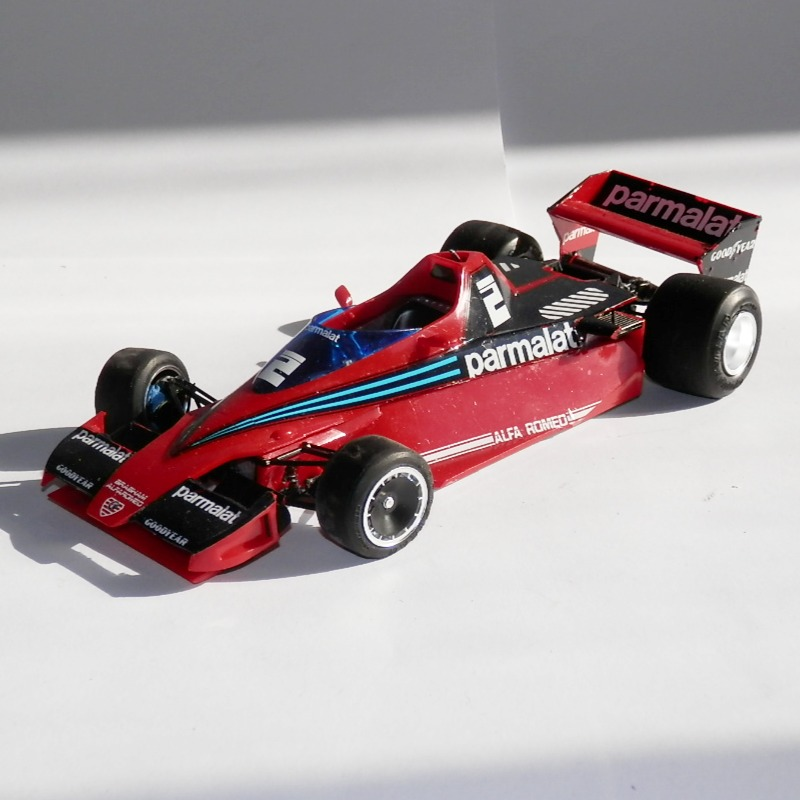
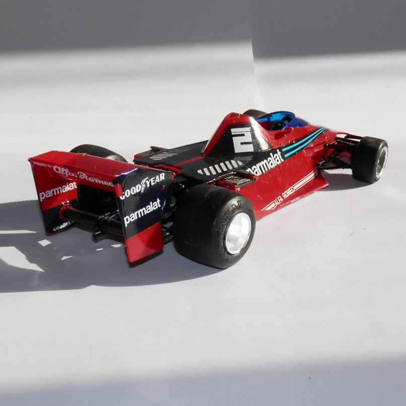

Auto e veicoli stradali · scale model archive
Brabham BT49
Brabham BT49 — Kit: Hasegawa, Scale: 1/24. Version used in 1978 F1 season

Photo gallery

English description
Version used in 1978 F1 season
Descrizione italiana
Versione usata nella stagione F1 1978.